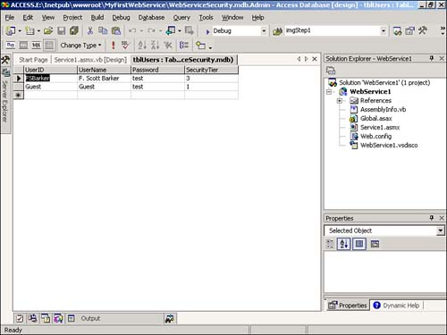
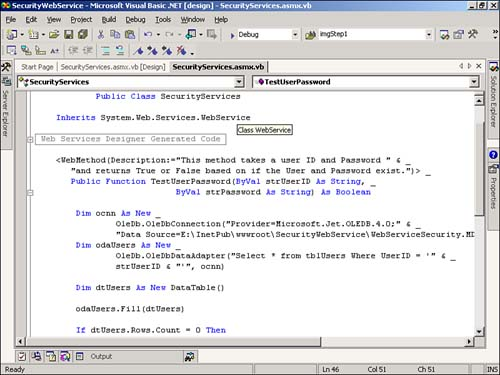
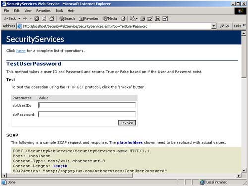

I have seen how to create a Web Service using the sample that Microsoft provides. This was instructive but not very useful. How do I create a Web Service that uses parameters?
For this How-To, you are going to create the start of a security Web Service. This security Web Service is going to take in two parameters: Login Name and Password. It will then check against a table that you will create of names, passwords, and security levels.
The method you will create first will then pass back True or False if the name and password are found.
The security table is included in the Web Service's Web folder. It is called WebServiceSecurity.MDB and is, in fact, a jet database. You can see the table created, tblUsers, in Figure 13.8.

The method created for this first real example will take in the username and password and then look up the username. If the username is found, the method will then compare the password. If the password matches, then True will be returned from the method. Otherwise, False will be returned.
You will pass parameters to Web Service methods just as you would to any other methods or functions, as shown in the function header for the Web Service method created in this How-To:
Public Function TestUser(ByVal strUserID As String, ByVal strPassword As String) AsBoolean
The return value is also assigned to the name of the function.
You can help developers who use your Web Service by adding descriptions to the Web Service and each of the methods you create. This cuts down on the number of support requests you get, and is a good habit to get into. For the Web Service, you will place it in the WebService header, where you will want to specify your own namespace as well:
<WebService(Namespace:="http://appsplus.com/webservices/", _
Description:="Testing of security routines.")> _
Public Class SecurityServices_
This causes the description specified to be displayed as the first line on the main test page.
For the method, you will include the description in the Web Method header:
<WebMethod(Description:="This method takes a user ID and Password " & _
"and returns True or False based on if the User and Password exist.")>
Public Function TestUserPassword(ByVal strUserID As String, _
ByVal strPassWord As String) As Boolean
You can see what the lines of code look like in the designer in Figure 13.9.

Now it's time to put it all together.
Open and run the SecurityWebService solution. From the main test page, click on the link for the method TestUserPassword. You are presented with a page to input the user ID and password (see Figure 13.10.) If you type FSBarker for the strUserID and test for the strPassword, the value True is returned; otherwise, False is returned.
Create an ASP.NET Web service project, calling it SecurityWebService.
Highlight the default .asmx file created in the Solution Explorer, renaming it to SecurityServices.asmx.
Click on the View Code button in the Solution Explorer. Change the WebService at the top of the code to read as follows:
<WebService(Namespace:="http://appsplus.com/webservices/", _
Description:="Testing of security routines.")> _
Public Class SecurityServices
Add the code in Listing 13.2 to the code of the Web Service. (Double-click on the Web Service to bring up the code.) You could replace the commented out lines that display for the Hello World Web method. This code starts off by specifying the description for the Web Method and then declaring the function header for the method called TestUserPassword. The parameters strUserID and strPassword are passed, and a Boolean type value is returned. The rest of this routine should look somewhat familiar because a DataAdapter object is created, and a DataTable object is filled, based on the username that was passed in.
If a record is not found for the user, then False is passed back.
If a record is found and the password matches, then True is passed back. If the password for the user does not match, then False is passed back.
<WebMethod(Description:="This method takes a user ID and Password " & _
"and returns True or False based on if the User and Password exist.")>
Public Function TestUserPassword(ByVal strUserID As String, _
ByVal strPassword As String) As Boolean
Dim ocnn As New _
OleDb.OleDbConnection("Provider=Microsoft.Jet.OLEDB.4.0;" & _
"Data Source=E:\InetPub\wwwroot\SecurityWebService\" & _
"WebServiceSecurity.MDB")
Dim odaUsers As New _
OleDb.OleDbDataAdapter("Select * from tblUsers " & _
"Where UserID = '" &strUserID & "'", ocnn)
Dim dtUsers As New DataTable()
odaUsers.Fill(dtUsers)
If dtUsers.Rows.Count = 0 Then
TestUserPassword = False
ElseIf dtUsers.Rows(0).Item("Password") = strPassword Then
TestUserPassword = True
Else
TestUserPassword = False
End If
End Function
Note
If you have a problem with sharing rights on the database, you might want to include "Mode=Share Deny None;" in your connection string. |
Press the Start button on the toolbar to test the service.

When you are working in code for your Web Service, you can perform the majority of tasks, including ADO.NET, that you can in ASP.NET, except for those depending on a user interface (UI).
You have now seen how to specify parameters. Now check out the next How-To to see how to consume, or use, your Web Service in an application.